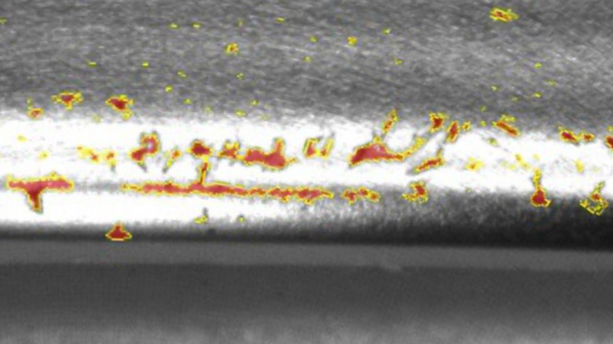
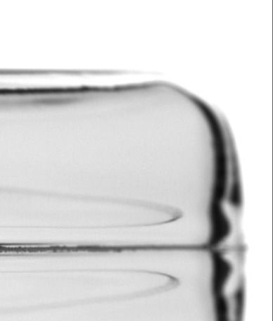
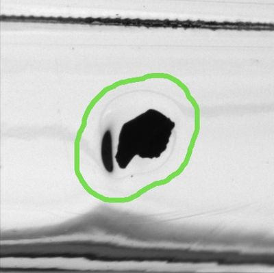
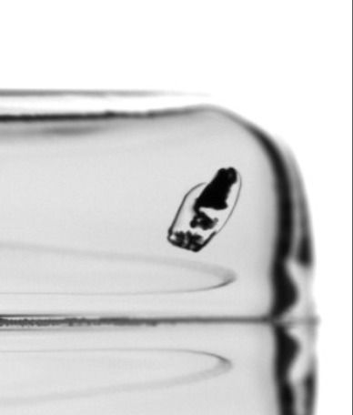
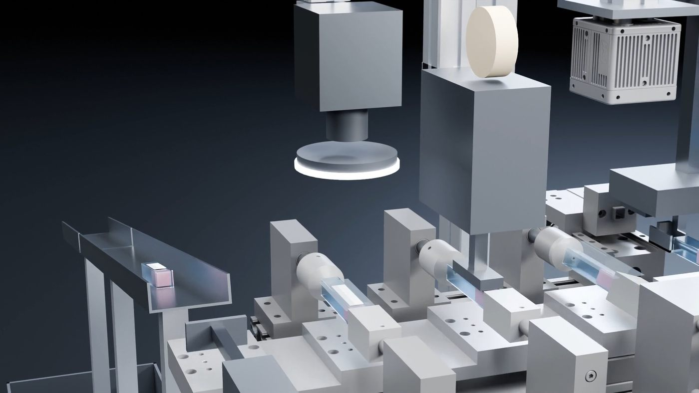
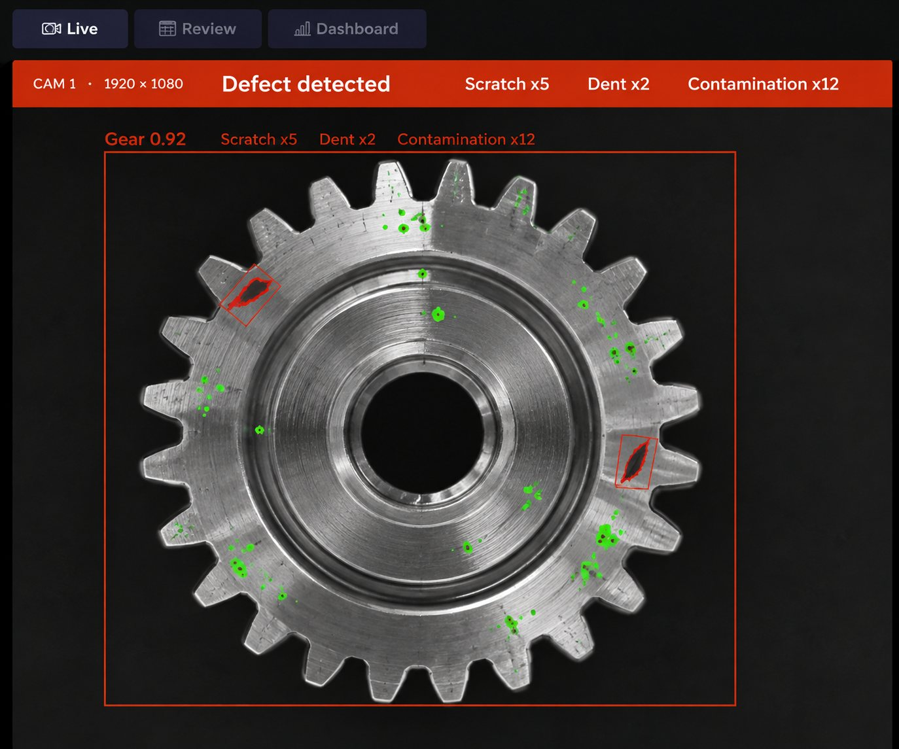
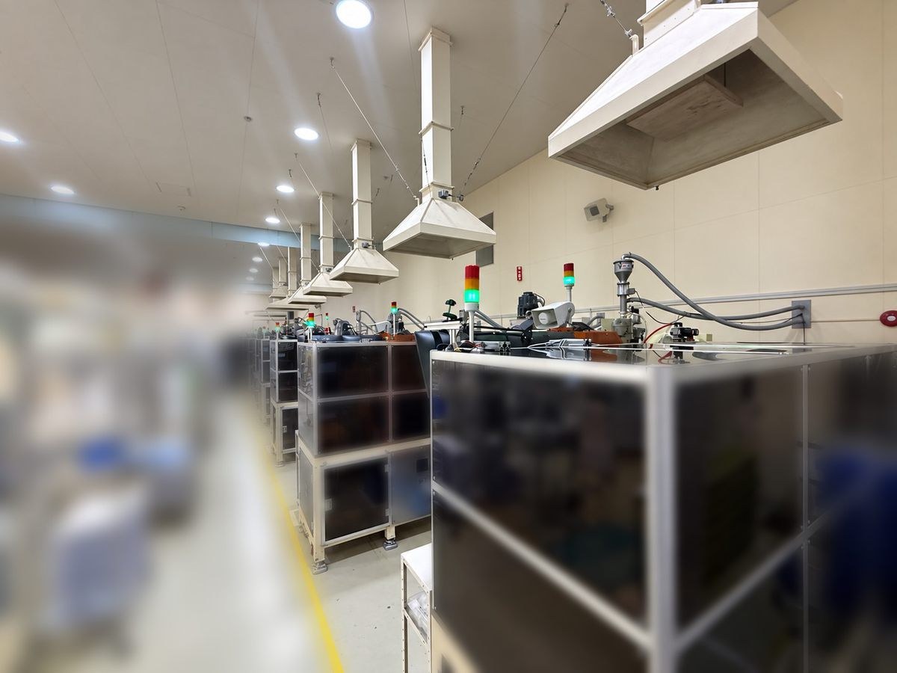
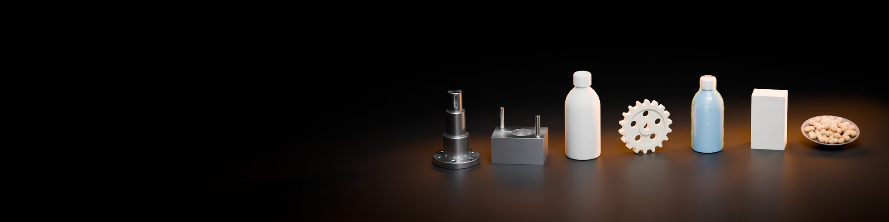

細かな不良も検出01 — DETECT今の画像検査で
今の画像検査で
拾えない不良も
形が一定しない傷・錆・異物も、実際の画像から学習した高感度なモデルで検出します。今の検査の後ろに追加して、取りこぼしだけを拾う使い方もできます。
nanoIは、nanoFACTORYが開発するAI外観検査のソフトウェアです。グループ会社・本多プラスの自社工場では、nanoIを載せた画像検査装置が10台、24時間動いています。
お客様の検査設備に載せるソフトだけでも、本多プラスが機械設計から作る装置ごとでも。今の設備に合わせてお届けします。
形が毎回ちがう傷・錆・異物は、ルールで決める検査では取りこぼしが出ます。
製品を止めて向きをそろえる機構が必要で、今のラインには入りません。
不良が少ない良いラインほど、学習用の不良画像が集まりません。
AIを組み合わせた画像処理システムが、撮像のばらつきを補正します。製品を止めずに、流れたまま撮って判定できるので、今の生産ラインにそのまま後付けできます。
ルールで決めにくい傷・錆・異物も、実際の画像から学習して見つけます。今の検査の後ろに追加して、取りこぼしだけを拾うこともできます。
検出の仕組みを見る位置や向きのばらつきはAIが補正します。ストッパーや整列の機構なしで、今のラインにカメラと照明を組み込みます。
提供の形を見る実際の不良の形を良品画像に追加して、学習に必要な枚数まで増やします。どこまで使えるかはPoCで確かめます。
学習データの作り方を見るAIを組み合わせた画像処理システムだから、インラインのまま、お客様の品質基準に合わせた検出ができます。見つけるだけでなく、品質基準どおりの合否まで出します。

細かな不良も検出形が一定しない傷・錆・異物も、実際の画像から学習した高感度なモデルで検出します。今の検査の後ろに追加して、取りこぼしだけを拾う使い方もできます。



実際の不良の形を良品の画像に追加し、学習に必要な枚数まで増やします。どの不良にどこまで使えるかは、PoCで確かめます。

ラインを止めずに全数検査今ある搬送ラインにカメラと照明を組み込み、現状の設備のまま全数を検査します。OK/NGを設備へ出力し、排出まで連動します。

基準どおりに合否不良を位置と輪郭（面）で出すので、面積・長さ・個数でお客様の品質基準どおりに合否を決められます。判定と画像は全数記録し、あとから見返せます。
※掲載している画像はイメージです（CGを含みます）。
検査設備がすでにあるならnanoIのソフトだけを。装置から必要なら、nanoIを搭載した、グループ会社である本多プラスの画像検査装置として。どちらに進むかは、無料サンプル検証とPoCの結果を見てから決めていただけます。
照明や搬送はお客様の設備のまま。AIの検査モデルをnanoFACTORYが開発し、今の設備に組み込みます。今の装置のカメラと検査用コンピュータだけを入れ替えることもできます。
対応：nanoFACTORY 既存の画像検査の後ろにnanoIを追加し、取りこぼしだけを拾う構成も組めます。
nanoIを搭載した、弊社nanoFACTORYのグループ会社である本多プラスのAI外観検査装置ソリューションです。装置は決まった寸法の製品ではなく、お客様のラインに合わせて機械設計から作ります。
対応：本多プラス × nanoFACTORY 成形メーカーが自社工場で使っている装置と同じ考え方で設計します。
ご相談の窓口は、どちらもnanoFACTORYです。ソフトだけか装置ごとか決まっていなくても構いません。現場の状況を伺い、合う形をご提案します。

本多プラスは、1946年創業のプラスチック成形メーカーです（愛知県新城市）。自社の成形ラインで10年かけて画像検査を開発・運用し、いまはnanoIを載せた検査装置10台が24時間動いています。
全数の画像と判定を記録し、不良の分析にも使っています。装置に載っているAIが、nanoFACTORYが開発したnanoIです。
※検査員0人：現在は一部の製品で二重検査を実施しています。 ※導入前のクレームの棒の高さはイメージです。
ここにない製品も、まずはご相談ください。検出できるかは、無料のサンプル検証で確かめます。

※画像はイメージです（CG）。
一気に全ラインを切り替えることはしません。検出できるかを確かめ、現場に近い構成で実証してから、本導入を判断いただけます。
不良品を数点お預かりし、検出できるかを確認してご報告します。
ラボ、または現地で、現場に近い構成を再現して実証します。
結果と効果を見て、導入するか、ソフトだけか装置ごとかを判断いただきます。
装置ごとの場合、本多プラスがラインに合わせて設計・製作します。
据付・立ち上げから、運用中の調整と再学習まで続けて支援します。
※期間は、装置の要件やPoCを行うかどうかで変わります。
はい。検査設備がすでにあり、ソフトの切り替えやAIモデルの開発だけをご希望の場合は、nanoIのみで対応します。今のカメラ・照明が使えるかは、無料サンプル検証とPoCで確認します。
数点から始められます。実際の不良の形を良品の画像に追加して学習データを増やす方法があり、どの不良にどこまで使えるかをPoCで確かめます。まずは手元の不良品をお送りください。
決まった寸法の製品ではありません。装置ごとの場合は、本多プラスがお客様のラインと置き場所に合わせて機械設計から作ります。今の搬送ラインにカメラと照明を組み込む形も選べます。
構成によります。既存の装置の後ろにnanoIを追加して取りこぼしだけを拾う形、カメラ・照明を流用してソフトだけ切り替える形など、現場の状況を伺って決めます。
製品と不良の種類、撮像条件で変わるため、一律の数字は出していません。お客様の製品で、無料サンプル検証とPoCの結果としてお示しします。
nanoFACTORYです。ソフトだけ・装置ごとのどちらでも、窓口は同じです。装置ごとの場合は、本多プラスと一緒に対応します。
ソフトだけか装置ごとか、決まっていなくても構いません。下のボタンを押すと、記入項目入りのメールが開きます。
Email: